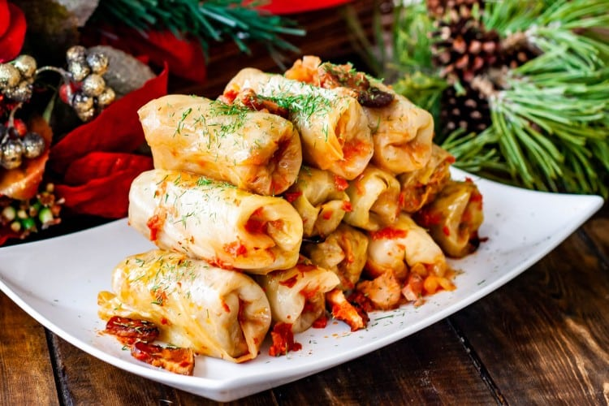

Sarmale

Sarmale are made of sour cabbage filled with meat boiled in tomato sauce
This recipe for Romanian cabbage rolls is tried and true. I’ve made it probably a hundred times, and have rolled thousands of them!
The big difference between Romanian cabbage rolls and others are that we make them with sour cabbage.
This is my mom’s recipe and it’s my favorite. I won’t eat cabbage rolls made any other way.
The other piece that separates Romanian cabbage rolls from the rest is that we add some kind of smoked meat. This time I used smoked bacon.
Now I’ve got your attention, hey?
Ingredients:
- 2 tablespoon vegetable oil
- li large onion choppped
- li/2 cup long grain rice uncooked, preferably basmati
- 2 pound ground pork preferably
- li/4 cup parsley chopped
- li/4 cup fresh dill chopped
- salt and pepper to taste
- 2 pound sour cabbage leaves
- 15 slices bacon chopped
- 4 cups tomato juice
Instructions:
- Preheat the oven to 375°F.
- Heat the oil in a skillet, add the onions and cook until softened and translucent. Add the rice and cook for another minute.
- In a large bowl, add the ground pork, salt, pepper, parsley, dill and the onion and rice mixture. Be careful with the salt, not too much is needed because the sour cabbage is already salty. Mix well using your clean hands.
- Remove all the cabbage leaves and cut each leaf in half. Romanian cabbage rolls are traditionally smaller than the Polish cabbage rolls, so that's why I recommend cutting each leaf in half, otherwise you can use the entire leaf for one roll.
- Fill each leaf with about a couple tbsp of the meat mixture and roll. Repeat with all the remaining meat and cabbage. If you have any cabbage left over, chop it up and spread it over the bottom of a big pot.
- Put all the rolls in the pot, add the chopped bacon in between the cabbage rolls and add the tomato juice over the rolls. Add more water if needed, the juice should cover the cabbage rolls entirely. Cover the pot with aluminum foil or a lid.
- Place in the oven and bake for 2 hours, remove the foil or lid and place back in the oven and cook for another 1 ½ to 2 hours. Serve hot with a bit of sour cream on top and with a side of polenta.